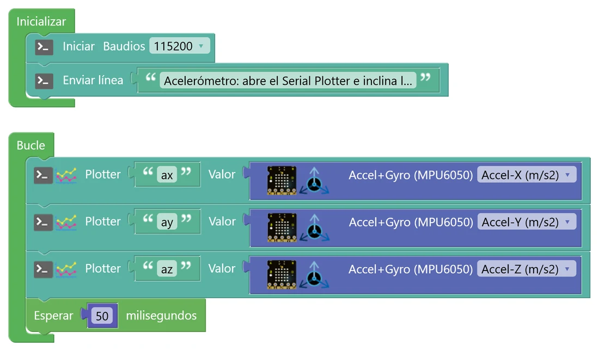
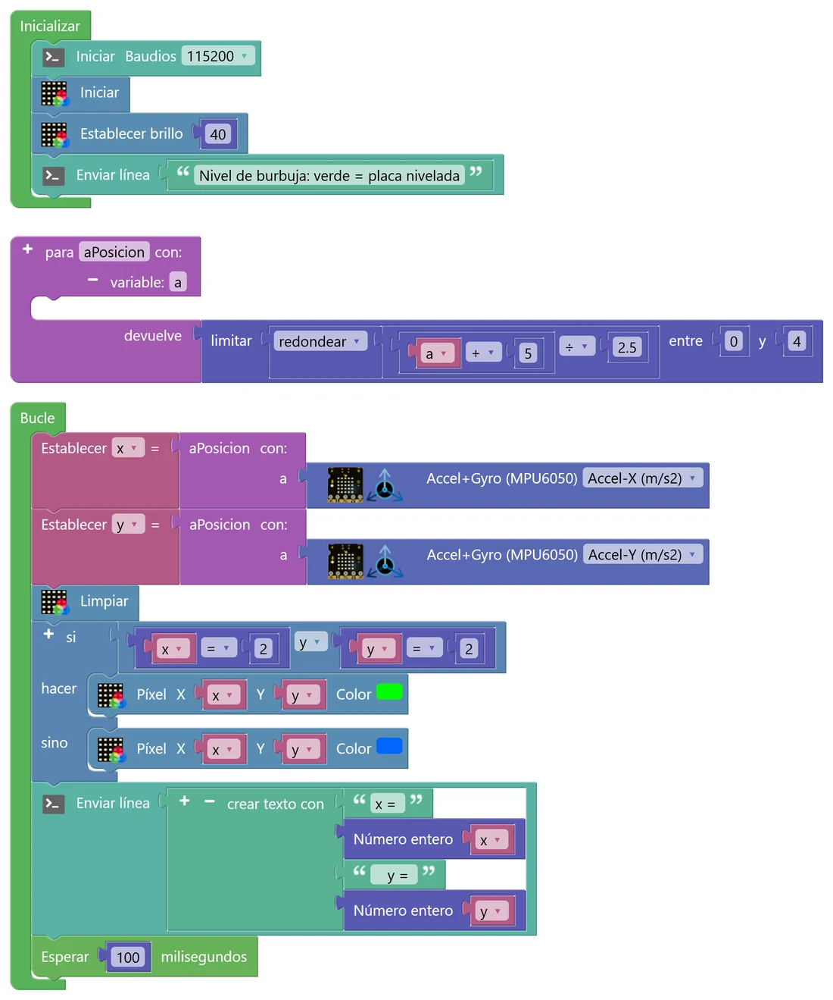
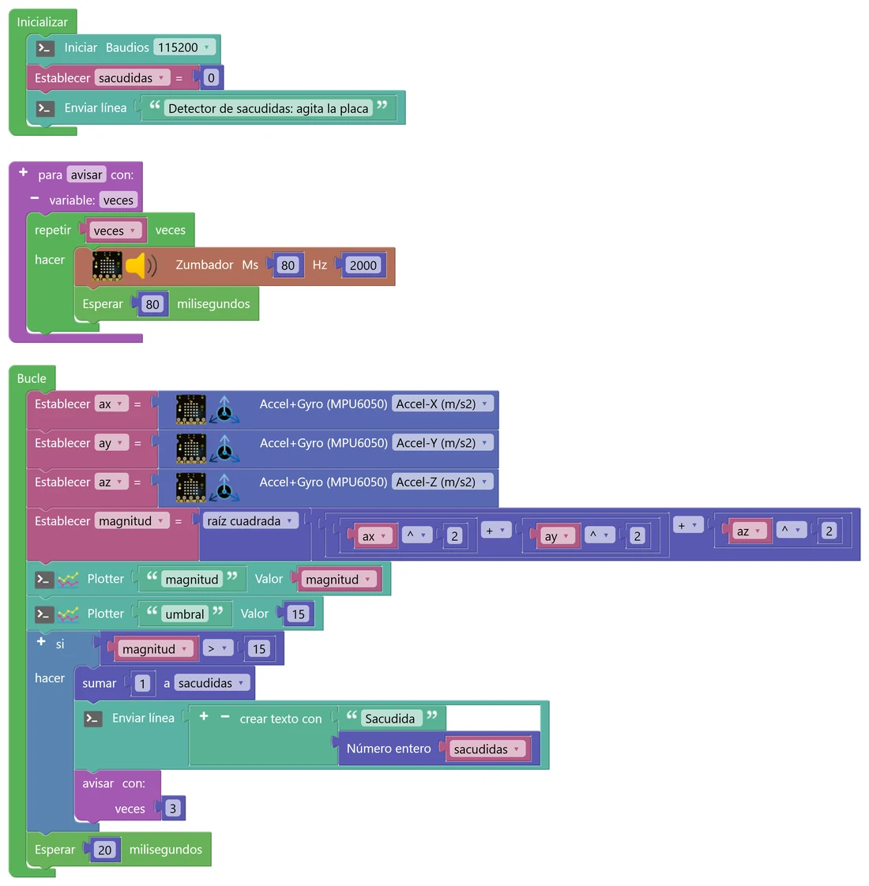

N7 Funciones y movimiento
Dentro de la placa hay un pequeño chip que nota la gravedad y los giros: el mismo que usa tu móvil para girar la pantalla. Con él harás un nivel de burbuja y un detector de sacudidas. Y como los programas empiezan a crecer, aprenderás a organizarlos en funciones: trozos de programa con nombre que puedes usar tantas veces como quieras.
🎯 Objetivo
- Leer el acelerómetro y el giroscopio de la placa y entender qué miden.
- Crear y usar funciones: sin datos, con parámetros y que devuelven un resultado.
- Calcular con la placa: raíz cuadrada, potencias, valor absoluto y ángulos.
- Descubrir por qué un sensor puede «equivocarse poco a poco» (la deriva del giroscopio).
🧠 Antes de empezar
El chip MPU6050 tiene dos sensores. El acelerómetro mide aceleraciones en tres direcciones (ejes X, Y y Z), en m/s². Aunque la placa esté quieta, siempre nota la gravedad: 9,8 m/s² hacia abajo. Si la placa está plana, toda la gravedad cae en un eje; si la inclinas, se reparte entre varios. El giroscopio mide lo deprisa que gira la placa, en grados por segundo.
El bloque Accel+Gyro (MPU6050) está en micro:STEAMakers › Sensores. En su desplegable eliges qué quieres leer: Accel-X, Y o Z (m/s²), Giro-X, Y o Z (º/s) o Ángulo-X, Y o Z (º).
🐍 Funciones en Python
def avisar(veces): # con parámetro for _ in range(veces): pitar() def a_posicion(a): # devuelve un valor return round((a + 5) / 2.5) avisar(3) x = a_posicion(2.5)
🧩 En STEAMakersBlocks
En Funciones hay dos bloques: para [nombre] (hace algo) y para [nombre] … devuelve (calcula y devuelve un valor). Con el + del bloque añades parámetros (variable: …). Al crear una función aparece, en ese mismo menú, el bloque para llamarla.
La función se coloca suelta en el espacio de trabajo, fuera de Inicializar y de Bucle.
💡 Para entenderlo: una función es una receta con nombre
En un libro de cocina, la receta «bechamel» se escribe una vez. Cuando otra receta la necesita, dice «añade una bechamel» y ya está: no la vuelve a explicar. Eso es llamar a una función. Los parámetros son los ingredientes que cambian cada vez («bechamel para 4 personas»), y lo que devuelve es el plato que te entrega. Ventajas: el programa es más corto, se lee mejor y, si hay que corregir algo, se corrige en un solo sitio.
🧩 Programa 1 · El lector del acelerómetro
Antes de usar el sensor hay que mirarlo. Este programa envía al plotter las tres aceleraciones veinte veces por segundo.

🛠️ Móntalo paso a paso
- En Inicializar: consola y un mensaje (Comunicaciones › Puerto serie).
- En Bucle: tres bloques Plotter con los nombres ax, ay y az. En cada Valor, un bloque Accel+Gyro (MPU6050) (micro:STEAMakers › Sensores) con Accel-X, Accel-Y y Accel-Z.
- Esperar 50 ms y abre el Serial Plotter.
- Con la placa plana sobre la mesa, ¿qué eje marca unos 9,8? ¿Y si le das la vuelta (boca abajo)? Haz un dibujo de la placa con los tres ejes y hacia dónde apunta cada uno.
- Inclina hacia la derecha y hacia la izquierda. ¿Qué eje cambia y de qué signo?
- Pon la placa de canto, en vertical. ¿Cuánto vale ahora cada eje? ¿Por qué el total sigue rondando 9,8?
🧩 Programa 2 · Nivel de burbuja (función que devuelve)
Un punto en la matriz que se mueve como la burbuja de un nivel de albañil: verde si la placa está plana. Para pasar de la aceleración (de −5 a 5 m/s², más o menos) a una posición de la matriz (de 0 a 4) hace falta la misma cuenta dos veces, una para X y otra para Y. En lugar de repetirla, la escribimos una vez en una función, aPosicion, que devuelve la posición.

🛠️ Móntalo paso a paso
- De Funciones, arrastra al espacio de trabajo el bloque para … devuelve. Cambia «hacer algo» por aPosicion. Pulsa su + para añadir un parámetro y llámalo a.
- En devuelve: limitar( redondear( (a + 5) ÷ 2,5 ), 0, 4 ). «redondear» está en el bloque de funciones matemáticas de Matemáticas (el que pone «raíz cuadrada»; cámbialo en su desplegable).
- Crea dos variables, x e y. En Bucle: Establecer x = aPosicion(Accel-X) y Establecer y = aPosicion(Accel-Y). El bloque aPosicion para llamarla ha aparecido en Funciones.
- Limpiar, y un si … sino: si x = 2 y y = 2, Píxel(x, y) en verde; si no, en azul. Termina con un Enviar línea con x e y y Esperar 100 ms.
- Calcula a mano aPosicion(0), aPosicion(−5), aPosicion(2,4) y aPosicion(8). ¿Para qué sirve el «limitar»?
- Si la burbuja se mueve al revés de lo que esperabas, ¿qué cambiarías? ¿Dónde: en la función o en las llamadas?
- ¿Cuántas veces está escrita la cuenta en el programa? ¿Cuántas veces se ejecuta en cada vuelta del Bucle?
🧩 Programa 3 · Detector de sacudidas (función con parámetro)
Para saber si la placa se agita, no importa hacia dónde: interesa la aceleración total. Se calcula como la diagonal de una caja (teorema de Pitágoras en 3D): magnitud = √(ax² + ay² + az²). En reposo vale unos 9,8; al agitar sube mucho. Cuando pasa de 15, contamos una sacudida y la función avisar pita tantas veces como le digamos.

🛠️ Móntalo paso a paso
- De Funciones, el bloque para … hacer (sin «devuelve»). Llámalo avisar y añádele un parámetro, veces. Dentro: repetir (en el hueco del número, la variable veces) → Zumbador 80 ms a 2000 Hz y Esperar 80 ms.
- Variables: ax, ay, az, magnitud y sacudidas (esta, a 0 en Inicializar).
- En Bucle: guarda las tres aceleraciones en ax, ay y az. Después, magnitud = raíz cuadrada( ax ^ 2 + ay ^ 2 + az ^ 2 ). La potencia (^) está en el bloque de operaciones de Matemáticas.
- Dos Plotter (magnitud y un umbral fijo de 15) y un si: si magnitud > 15 → sumar 1 a sacudidas, Enviar línea y el bloque avisar con veces = 3. Termina con Esperar 20 ms.
- Con la placa quieta en distintas posiciones (plana, de canto, inclinada), ¿cuánto vale la magnitud? ¿Por qué casi no cambia?
- Una sacudida fuerte, ¿cuenta una vez o varias? ¿Qué papel tiene la función avisar en eso? (Pista: ¿cuánto tarda en terminar?).
- Cambia avisar(3) por avisar(sacudidas). ¿Qué pasa a partir de la quinta sacudida? ¿Es buena idea?
🚀 Retos
Dado agitado
Agita la placa y sale un número del 1 al 6 en la matriz, como un dado de verdad. Mete lo de «lanzar el dado» (número al azar, mostrarlo, un pitido y una línea en la consola) en una función lanzar.
Alarma de movimiento
A arma la alarma (un punto azul en la matriz) y B la desarma. Si está armada y alguien mueve la placa (la magnitud se aleja más de 2 m/s² de 9,8), suena una alarma de 5 destellos rojos con pitido, metida en una función alarma. Usa una variable verdadero/falso y el bloque absoluto.
Inclinómetro
Calcula el ángulo de inclinación con el acelerómetro: ángulo = arcotangente(ax ÷ az), en una función con dos parámetros que lo devuelva en grados (ojo: la placa calcula la arcotangente en radianes). Envía al plotter tu ángulo y el del bloque «Ángulo-Y» del giroscopio, deja la placa quieta un par de minutos y explica qué le pasa a cada uno.
🔧 Bajo el capó: el MPU6050 y las funciones en C++
Así traduce STEAMakersBlocks la función del nivel de burbuja y el bloque del sensor:
#include "MPU6050_tockn.h" MPU6050 ag_mpu6050(Wire); double aPosicion(double a) { return constrain(round((a + 5) / 2.5), 0, 4); } double fnc_mpu6050(int _type) { ag_mpu6050.update(); // lee el chip por I2C if(_type==1) v = ag_mpu6050.getAccX()*9.80665; // de «g» a m/s² ... if(_type==8) v = ag_mpu6050.getGyroAngleY(); }
📡 El chip habla por I2C
El MPU6050 no está en un pin analógico: es un pequeño ordenador que se comunica con el ESP32 por el bus I2C, dos cables (datos y reloj) que pueden compartir varios chips. El sensor de temperatura del N8 también va por ahí. La librería MPU6050_tockn mide la aceleración en «g» (1 g = 9,80665 m/s²) y el bloque la convierte multiplicando. Cada vez que usas el bloque se llama a update() y se hace una lectura nueva: tres bloques son tres lecturas, un poquito separadas en el tiempo.
📐 Ángulos y deriva
El «Ángulo» del giroscopio se calcula sumando los giros que mide, vuelta tras vuelta (integración). Cada medida tiene un error minúsculo, pero al sumarlas sin parar el error se acumula y el ángulo se va desviando aunque la placa esté quieta: es la deriva. El ángulo del acelerómetro no deriva, porque se calcula con la gravedad en cada momento, pero se vuelve loco si mueves la placa con brusquedad. Los drones y los móviles combinan los dos.
La función atan de C++ devuelve el ángulo en radianes; para pasarlo a grados se multiplica por 180/π ≈ 57,3.
Las funciones que creas con bloques se convierten en funciones de C++ de verdad, con su tipo: void si no devuelven nada y double si devuelven un número. El parámetro también lleva su tipo: double a.
🔎 ¿Lo has entendido?
Cuando termines, haz una captura con tu puntuación para el porfolio.
📁 Al porfolio
- Capturas de tus programas y del Serial Plotter del Programa 1 en tres posiciones (plana, inclinada, de canto).
- Tu dibujo de la placa con los ejes X, Y y Z y hacia dónde apuntan.
- Tus respuestas a «Interpreta lo que ves», con las cuentas de aPosicion hechas a mano.
- Explica con tus palabras qué ventaja tiene usar una función en el nivel de burbuja.
- Vídeo corto del nivel de burbuja o del detector de sacudidas.
- El reto que hayas hecho. Si es el pro, la captura del plotter tras dos minutos y tu explicación de la deriva.
- Captura de tu resultado en «¿Lo has entendido?».